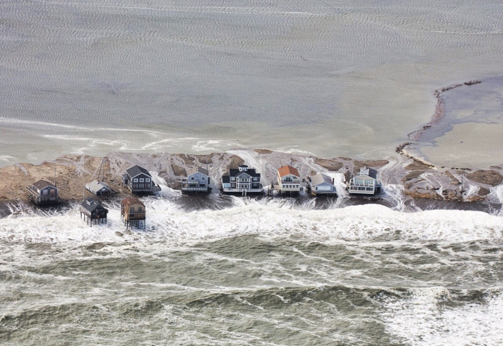
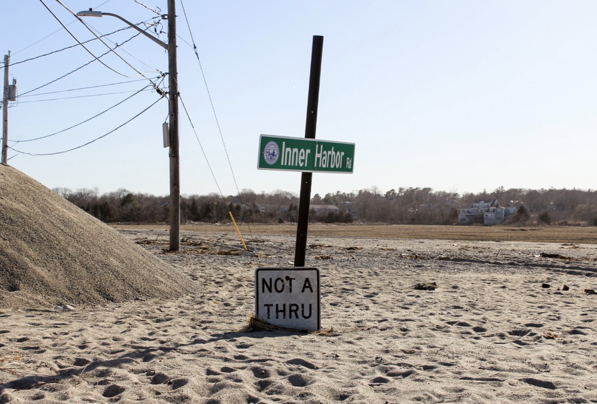
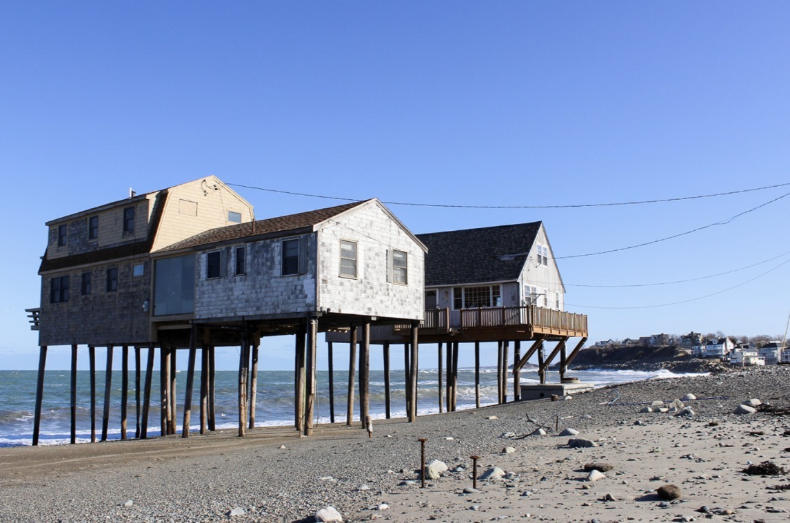
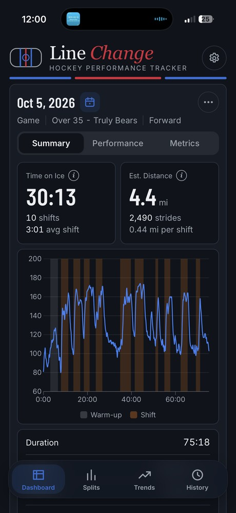
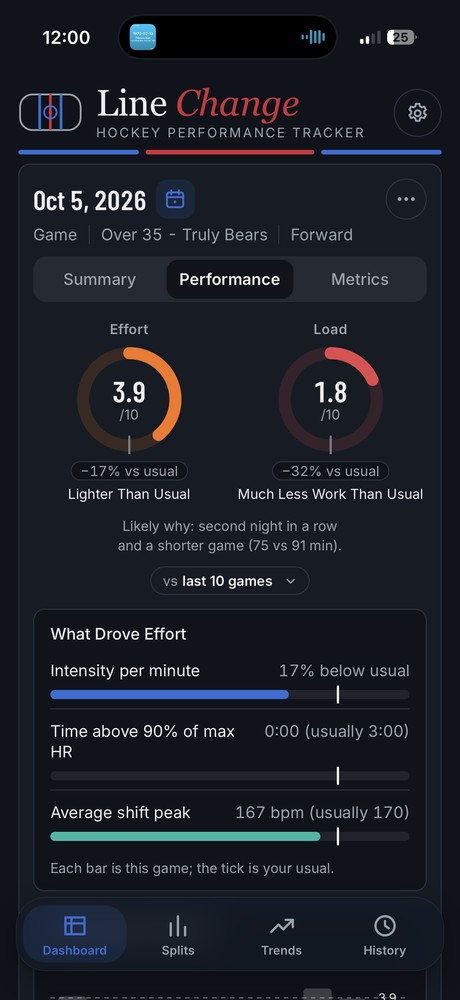
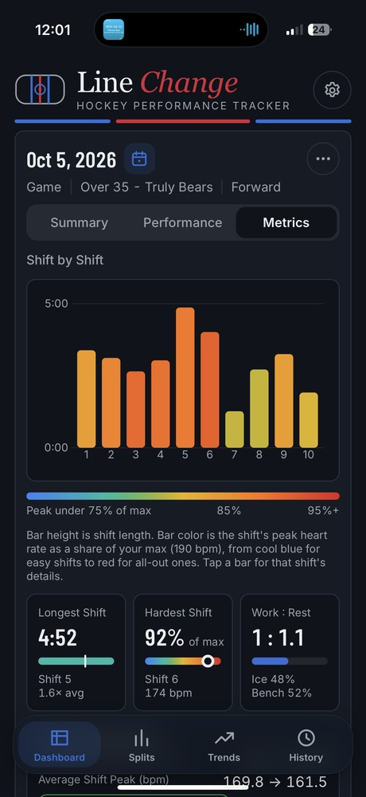
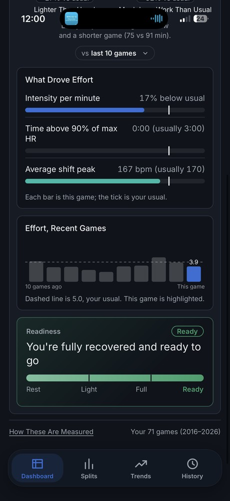
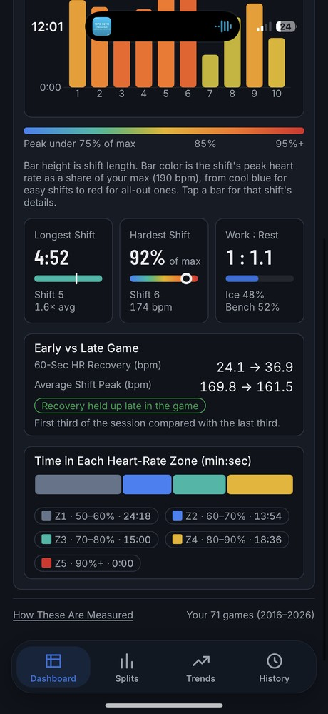
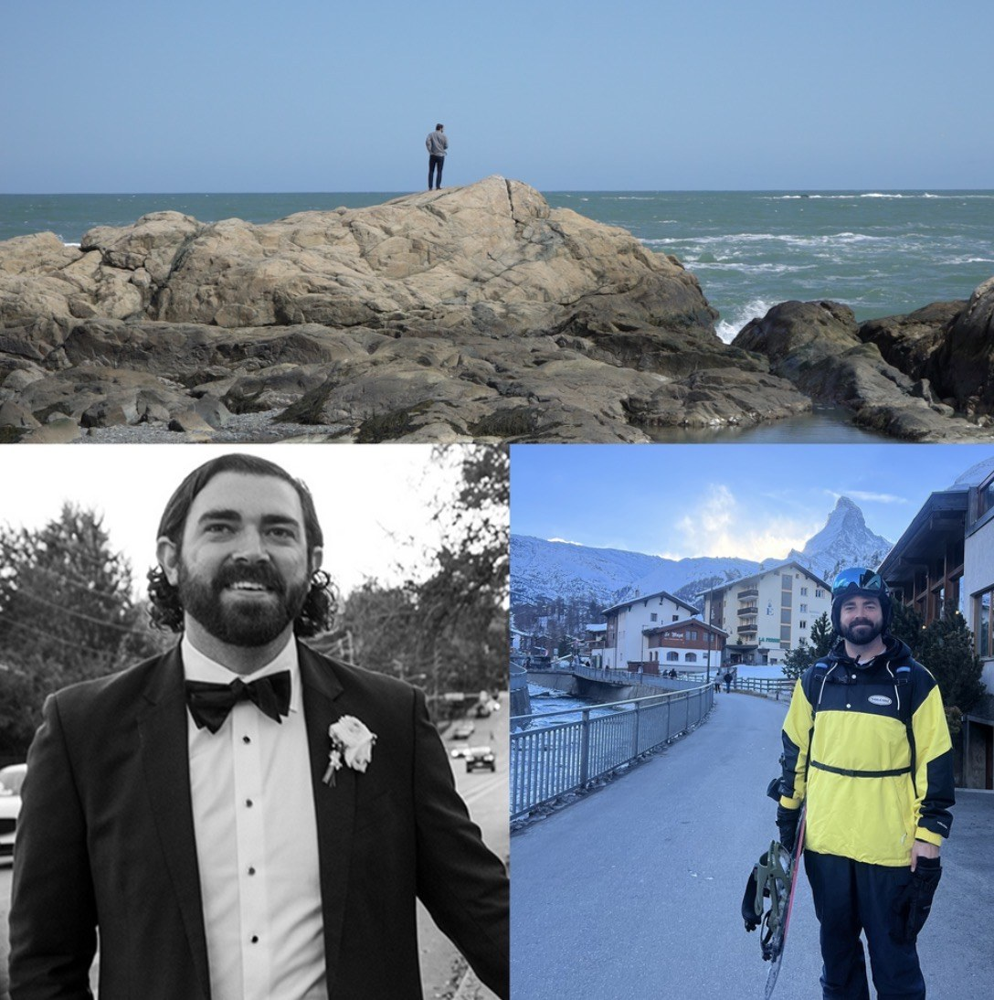

Product Designer · Atlanta
10+ years designing information architecture, flows and interfaces for Nasdaq, UPS and The Weather Channel. A journalist by training, so I start with what people need to understand, then design the path to it.
Five case studies · process, decisions and results
Featured story · The Weather Channel



Featured story · The Weather Channel
A deep dive into Scituate, Massachusetts, a town battered by nor'easters, and how rising seas and stronger storms are changing life for longtime residents.
“Every year we pull up the stairs and give it a kiss and say ‘I hope you’re here in the spring.’”
Sarah Moran, whose family has owned a Peggotty Beach home since 1922
Before I designed for people in a storm, I reported on them. This story is where I learned to make complex climate data feel personal.
Article: Drew Mayer (MacFarlane) · Video: Drew Mayer (MacFarlane), Kevin Hayes and Will Jauregui
Photos: Andrew MacFarlane/weather.com · Aerial: Karl Swenson/SKYWARN Spotter
Passion project · iPhone, Apple Watch & web
I play hockey and wanted to track my stats like the pros, so I designed and built my own performance tracker. Line Change reads heart rate from a chest strap or watch and infers shifts, time on ice, effort and training load, with no GPS or motion data.





Scroll sideways for more screens →
01
Analytics, interviews and audits to learn what people come to do.
02
Sitemaps, flows and navigation that match how users think.
03
Interaction and copy designed together, so reviews test the actual experience.
04
Components, patterns and CMS models that keep it consistent at scale.

I started in newsrooms, covering hurricanes and nor'easters for The Weather Channel. That taught me to explain complicated things to people under pressure, which is still the core of my design work.
Since then I've led UX for the UPS.com redesign, restructured futures data at ICE and rebuilt Nasdaq.com's information architecture.
Off the clock: ice hockey, ski trips with my wife, live music and distance cycling.
Webby Award Honoree
2024 · Best User Experience, UPS.com
Edward R. Murrow Award
2017 · Best Network TV News Website
EPPY Award
2019 · Best News Feature
New York Press Club
2017 · Best Website, Hurricane Coverage